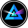

# CS 4501 ### Cryptocurrency <p class='titlep'> </p> <div class="titlesmall"><p> <a href="http://www.cs.virginia.edu/~asb">Aaron Bloomfield</a> (aaron@virginia.edu)<br> <a href="http://github.com/aaronbloomfield/ccc">@github</a> | <a href="index.html">↑</a> | <a href="./03-numbers.html?print-pdf"><img class="print" width="20" src="../slides/images/print-icon.png" style="top:0px;vertical-align:middle"></a> </p></div> <p class='titlep'> </p> ## Course Conclusion
# Contents [Looking Forward](#/forward) [Course Reflection](#/theend)
# Looking Forward
<h2><img src="images/logos/btc-coin-symbol.svg" class="cclogoheader"> Bitcoin (<a href="https://coinmarketcap.com/currencies/bitcoin/">BTC</a>) <br clear='all'></h2> - Pros - It started this whole field - High exchange rate for one Bitcoin - Cons - You can't do much other than transfer funds - Script language is rather limited - (It's kinda boring once you know about more cryptocurrencies) <h2><img src="images/logos/eth-coin-symbol.svg" class="cclogoheader"> Ethereum (<a href="https://coinmarketcap.com/currencies/ethereum/">ETH</a>) Pros<br clear='all'></h2> - It shows what one can do with a modern cryptocurrency - It has a Turing-complete programming language - A lot of developer resources - Including things like stack overflow posts for commonly encountered problems - Well developed development environments - Widely used, well trusted (relatively speaking) <h2><img src="images/logos/eth-coin-symbol.svg" class="cclogoheader"> Ethereum (<a href="https://coinmarketcap.com/currencies/ethereum/">ETH</a>) Cons<br clear='all'></h2> - Expensive to interact with - High volatility in the fees - Low transaction rate - Still PoW - Technology is now 7 years old ## Faster Transactions - One's we've seen: - <img src="images/logos/xlm-coin-symbol.svg" class="cclogo"> Stellar Lumens ([XLM](https://coinmarketcap.com/currencies/stellar/)): 1k TPS <br clear='all'> - <img src="images/logos/sol-coin-symbol.svg" class="cclogo"> Solana ([SOL](https://coinmarketcap.com/currencies/solana/)): 50k TPS <br clear='all'> - Both are meant to have the same features as Ethereum (smart contracts, etc.) ## More features - One's we've seen: - <img src="images/logos/matic-coin-symbol.svg" class="cclogo"> Polygon ([MATIC](https://coinmarketcap.com/currencies/polygon/)) <br clear='all'> - Polkadot ([DOT](https://coinmarketcap.com/currencies/polkadot-new/)) <br clear='all'> - Both have many more features than Ethereum - Creation of additional chains, native interaction with multiple blockchains - Plus they are faster as well ## Better GUIS -  Beam ([BEAM](https://coinmarketcap.com/currencies/beam/)) GUI:<br clear='all'> Image from [Beam's home page](https://beam.mw/) ## Different development languages - <img src="images/logos/eth-coin-symbol.svg" class="cclogo"> Ethereum has Solidity, of course (and others) <br clear='all'> - Polkadot uses Rust <br clear='all'> - <img src="images/logos/sol-coin-symbol.svg" class="cclogo"> Solana uses C, C++, and Rust <br clear='all'> - <img src="images/logos/matic-coin-symbol.svg" class="cclogo"> Polygon uses Javascript and Solidity <br clear='all'> - <img src="images/logos/atom-coin-symbol.svg" class="cclogo"> Cosmos uses Go <br clear='all'> - Many of the newer cryptocurrencies use lesser known languages (Erlang, Vue, Michelson, etc.) ## Is buying a GPU miner worth it? - Consider a Nvidia 3090 GPU - Currently selling for `$`1,800 on Amazon - It can make [`$`5.27 per day in ETH](https://2cryptocalc.com/gpu/24h/3090/1) - But not for long, because ETH is going to proof-of-stake - It can make about `$`3 per day otherwise - Minus about `$`1 per day in electricity - And you have to buy the machine it connects to - `$`2 per day will pay off the miner is 900 days (2.5 years) - Unless... - If the overall hash rate goes up, the amount you get per day goes down - Nvidia is coming out with 4090 GPUs in the fall that will have double the speed ## Is buying a Bitcoin miner worth it? - Consider the [Avalon 1166 miner](https://canaan.io/product/a1166pro-s-75t) - Current profit per day is under `$`3 once electricity is considered - And it's going down as the Bitcoin hashrate goes up - That will pay itself off in 1,500 days (4 years!) ## Where is the field going - If we could predict this, we'd all be rich on Bitcoin - Vitalik Buterin, the creator of Ethereum, has a [blog](https://vitalik.ca/) - [Reddit post: Best crypto life hacks](https://www.reddit.com/r/CryptoCurrency/comments/rtlsoi/best_lifehacks_in_crypto_that_beginners_should/) - Reddit post: How I accumulated my wealth by looking at pages 10 and beyond on Coingecko - The [original post](https://www.reddit.com/r/CryptoCurrency/comments/u5je3f/how_i_accumulated_my_wealth_by_looking_at_pages/) was deleted, but is available on [archive.org](https://web.archive.org/web/20220417124008/https://www.reddit.com/r/CryptoCurrency/comments/u5je3f/how_i_accumulated_my_wealth_by_looking_at_pages/) ## Want to start a cryptocurrency? - Starting it is easy - Make a ERC-20 token or fork existing source code - Getting people to trust it is *hard* - There are 100 coins created *each day* -- what will make yours stand out? - You need something different that fills a new niche - That probably means a new code base, not an ERC-20 token - And a *lot* of patience to get people to adopt it - (If you do this, let me know!)
# Course Reflection
## Course Objectives - Understand the theoretical aspects of cryptocurrency - Understand the basics of blockchain in general, and the details of a selected number of blockchains - Understand the uses of cryptocurrency and blockchain beyond that as a form of money - Understand the policy, ethical, legal, and tax implications of cryptocurrency - Be able to develop programs for a specific Blockchain - Implement a fully working modern cryptocurrency ## Cryptocurrencies we've seen - Throughout the semester: - <img src="images/logos/btc-coin-symbol.svg" class="cclogo"> Bitcoin ([BTC](https://coinmarketcap.com/currencies/bitcoin/)) <br clear='all'> - <img src="images/logos/rvn-coin-symbol.svg" class="cclogo"> Ravencoin ([RVN](https://coinmarketcap.com/currencies/ravencoin/)) <br clear='all'> - <img src="images/logos/eth-coin-symbol.svg" class="cclogo"> Ethereum ([ETH](https://coinmarketcap.com/currencies/ethereum/)) <br clear='all'> - From [zkSNARKs](zksnarks.html#/): - <img src="images/logos/zec-coin-symbol.svg" class="cclogo"> ZCash ([ZEC](https://coinmarketcap.com/currencies/zcash/)) <br clear='all'> - Firo ([FIRO](https://coinmarketcap.com/currencies/firo/)) <br clear='all'> - From [Blockchain Applications](applications.html#/): - <img src="images/logos/etc-coin-symbol.svg" class="cclogo"> Ethereum Classic ([ETC](https://coinmarketcap.com/currencies/ethereum-classic/)) <br clear='all'> ## Cryptocurrencies we've seen - From [Mining](mining.html#/): - Primecoin ([XPM](https://coinmarketcap.com/currencies/primecoin/)) <br clear='all'> - <img src="images/logos/ppc-coin-symbol.svg" class="cclogo"> Peercoin ([PPC](https://coinmarketcap.com/currencies/peercoin/)) <br clear='all'> - <img src="images/logos/fil-coin-symbol.svg" class="cclogo"> Filecoin ([FIL](https://coinmarketcap.com/currencies/filecoin/)) <br clear='all'> - <img src="images/logos/xlm-coin-symbol.svg" class="cclogo"> Stellar Lumens ([XLM](https://coinmarketcap.com/currencies/stellar/)) <br clear='all'> - Storj ([STORJ](https://coinmarketcap.com/currencies/storj/)) <br clear='all'> - <img src="images/logos/gre-coin-symbol.png" class="cclogo"> Greencoin ([GRE](https://coinmarketcap.com/currencies/greencoin/)) <br clear='all'> - From the Ethereum whitepaper: - <img src="images/logos/nmc-coin-symbol.svg" class="cclogo"> Namecoin ([NMC](https://coinmarketcap.com/currencies/namecoin/)) <br clear='all'> ## Cryptocurrencies we've seen - From [Tokens](tokens.html#/): - <img src="images/logos/shib-coin-symbol.svg" class="cclogo"> Shib Inu ([SHIB](https://coinmarketcap.com/currencies/shiba-inu/)) <br clear='all'> - <img src="images/logos/dai-coin-symbol.svg" class="cclogo"> DAI ([DAI](https://coinmarketcap.com/currencies/multi-collateral-dai/)) <br clear='all'> - <img src="images/logos/weth-coin-symbol.svg" class="cclogo"> Wrapped Ethereum ([WETH](https://coinmarketcap.com/currencies/weth/)) <br clear='all'> - From [Consensus](consensus.html#/): - <img src="images/logos/atom-coin-symbol.svg" class="cclogo"> Tendermint / Cosmos ([ATOM](https://coinmarketcap.com/currencies/cosmos/)) <br clear='all'> - From this slide set: - Beam ([BEAM](https://coinmarketcap.com/currencies/beam/)) <br clear='all'> ## Cryptocurrencies we've seen - From [Scalability](scalability.html#/): - <img src="images/logos/wbtc-coin-symbol.svg" class="cclogo"> Wrapped Bitcoin ([WBTC](https://coinmarketcap.com/currencies/wrapped-bitcoin/)) <br clear='all'> - <img src="images/logos/matic-coin-symbol.svg" class="cclogo"> Polygon ([MATIC](https://www.coinbase.com/price/polygon)) <br clear='all'> - Polkadot ([DOT](https://www.coinbase.com/price/polkadot)) <br clear='all'> - <img src="images/logos/sol-coin-symbol.svg" class="cclogo"> Solana [SOL](https://www.coinbase.com/price/solana) <br clear='all'> - Stablecoins: - <img src="images/logos/usdc-coin-symbol.svg" class="cclogo"> USD Coin ([USDC](https://coinmarketcap.com/currencies/usd-coin/)) <br clear='all'> - <img src="images/logos/usdt-coin-symbol.svg" class="cclogo"> Tether ([USDT](https://coinmarketcap.com/currencies/tether/)) <br clear='all'> - (and DAI form a previous slide) <h2>HW comments</h2> <table class="transparent"> <tr><td style="width:45%"> <p>"Small" homeworks</p> <ul> <li>HW S1: Google form</li> <li>HW S2: Bitcoin whitepaper</li> <li>HW S3: Ethereum white-paper</li> <li>HW S4: Private Ethereum blockchain</li> <li>HW S5: dApp Introduction</li> </ul> </td><td style="width:10%"></td><td class="top" style="width:45%"> <p>Programming homeworks</p> <ul> <li>HW P1: Overview</li> <li>HW P2: ECDSA</li> <li>HW P3: BTC parser</li> <li>HW P4: Bitcoin scripting</li> <li>HW P5: dApp Gradebook</li> <li>HW P6: dApp Tokens</li> <li>HW P7: dApp Auction</li> <li>HW P8: DEX</li> <li>HW P9: DAO & web3</li> <li>HW P10: Arbitrage trading</li> <li>HW P11: MetaMask</li> </ul> </td></tr></table> </section> ## Topics we didn't cover - Mining algorithms, CUDA (mining on a GPU) - P2P networking - That's more in the realm of a Networks class - Multi-blockchain wallets and how they work - Mining pools - More modern cryptocurrency systems - That would really need a follow-on course ## What didn't work well - Debugging Solidity programs - Solidity IDE crashing in the middle of the semester - My slowness in grading & regrading - Roughness with some of the homeworks - The zkSNARKs lectures - Blockchain disconnections ## What did work well - You all did not get a "half course" - Using our own blockchain for the course - The lecture topics - The homeworks (mostly) - I didn't trip and fall off of the silly stage in the classroom ## Did I push too hard? - I feel that the frustration was more caused by other issues than the raw work load: - Problems debugging Solidity - Homework specification issues - Remix acting up - Factoring that out, was it too hard? ## Changes for next semester - Restart the blockchain, and with a different chain ID - Same course structure - Likely same homeworks, although cleaned up a bit - Four undergraduate TAs! - Our two graduate TAs are graduating - Many more diagrams in the lectures ## Let me know your comments! - Please send us your feedback! - Either by e-mail or anonymously or on the course surveys - Please fill out the course surveys! <h2>Have a great break!</h2> <img class="stretch" src="http://www.adamfishercox.com/calvinandhobbes/pageimages/laststrip.png" alt="calvin and hobbes" style="width:100%;background-color:white">